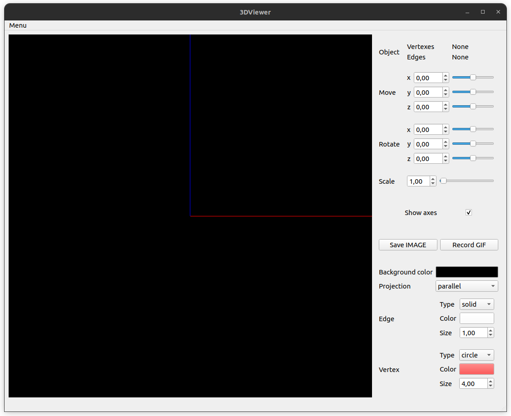

Внешний вид приложения

Поле Scale предназначено для изменения размера объекта.
Для переключения отображения координатных осей используется переключатель (Show axes).
Для открытия файла используйте в (Menu) кнопку (Open)